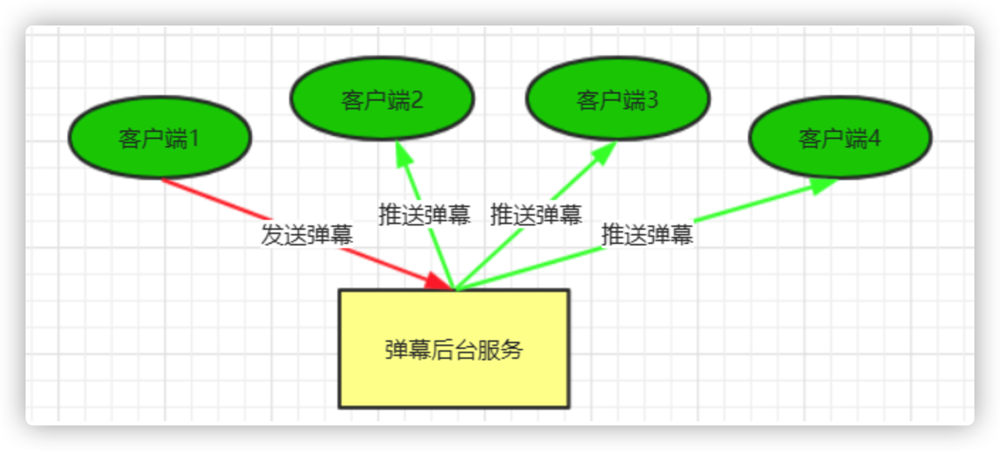
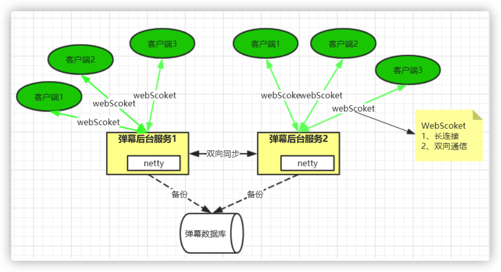
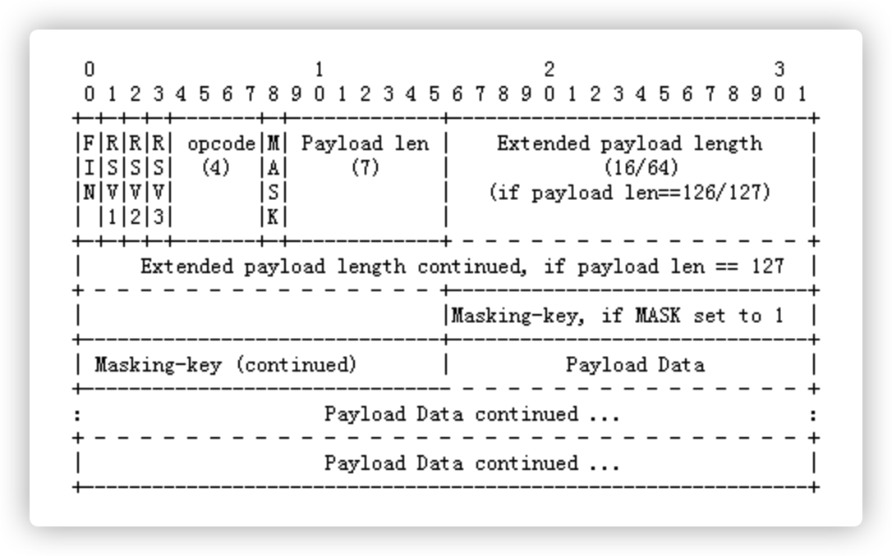
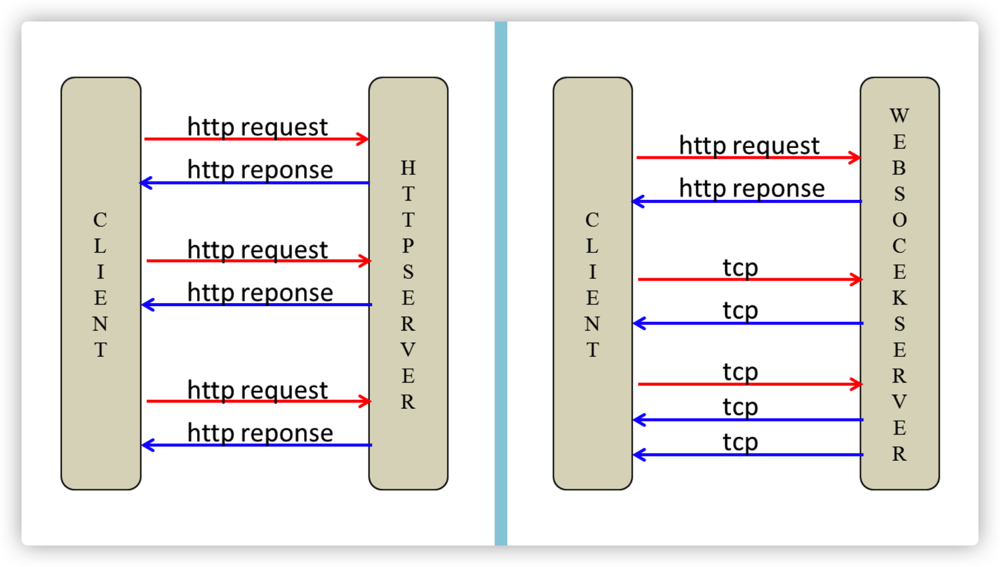
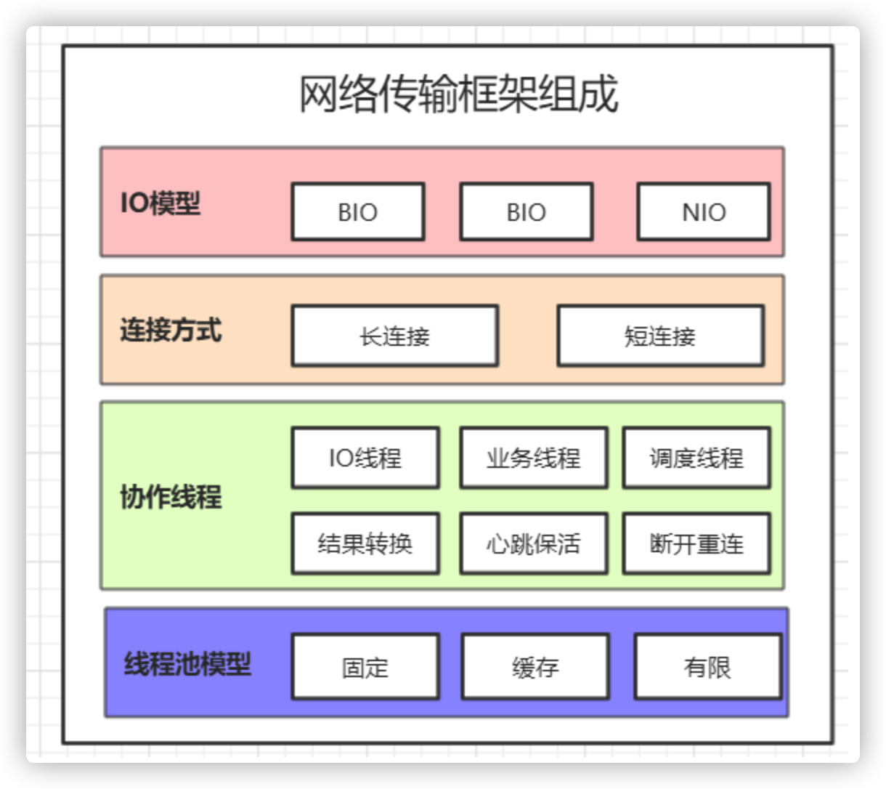
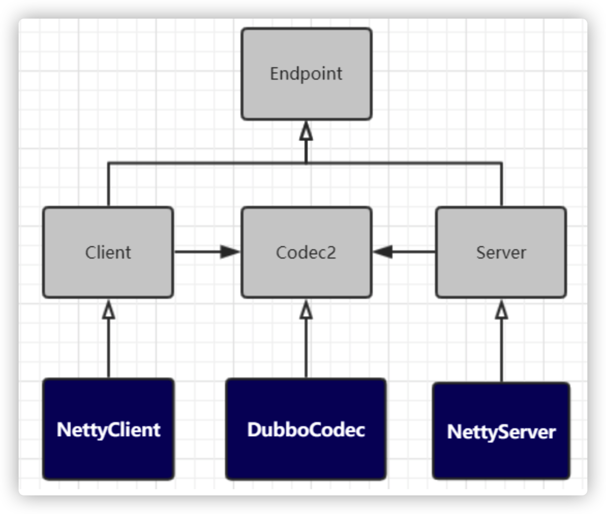
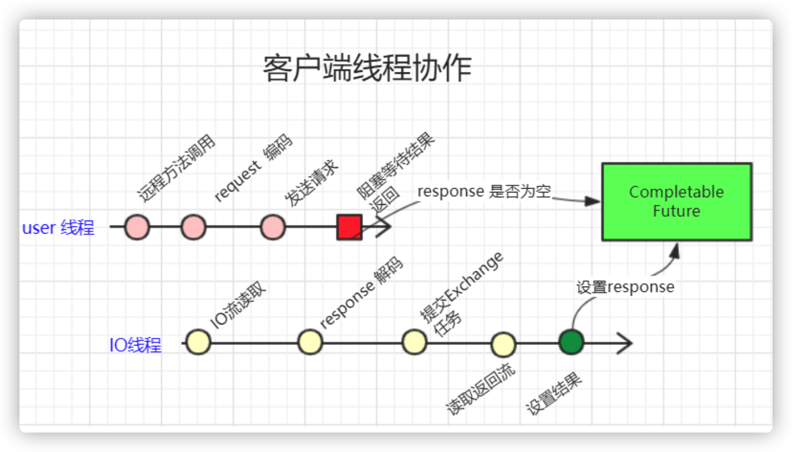
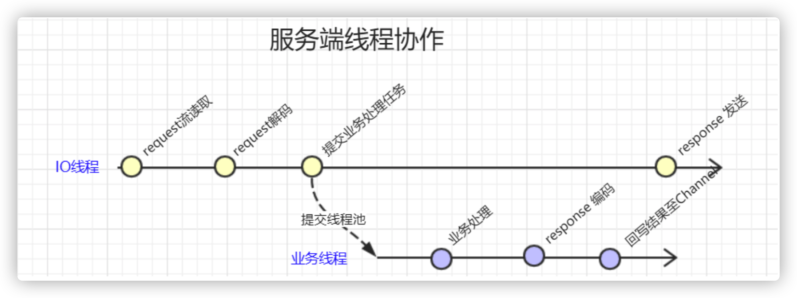

Netty在弹幕系统与Dubbo框架中的应用
1. 弹幕系统概要设计
什么是弹幕系统？
弹幕系统特点：
- 实时性高：你发我收， 毫秒之差
- 并发量大：一人吐槽，万人观看
- 对数据一至性要求并不高.
2. 弹幕系统架构设计
业务架构

实现方案一

实现方案二

3. WebScoket协议解析实现
3.1 webSocket 协议简介
webSocket 是html5 开始提供的一种浏览器与服务器间进行全双工二进制通信协议，其基于TCP双向全双工作进行消息传递，同一时刻即可以发又可以接收消息，相比Http的半双工协议性能有很大的提升
webSocket特点如下：
- 单一TCP长连接，采用全双工通信模式
- 对代理、防火墙透明
- 无头部信息、消息更精简
- 通过ping/pong 来保活
- 服务器可以主动推送消息给客户端，不在需要客户轮询
3.2 WebSocket 协议报文格式
我们知道，任何应用协议都有其特有的报文格式，比如Http协议通过 空格 换行组成其报文。如http 协议不同在于WebSocket属于二进制协议，通过规范进二进位来组成其报文。具体组成如下图：

报文说明：
FIN
标识是否为此消息的最后一个数据包，占 1 bit
RSV1, RSV2, RSV3: 用于扩展协议，一般为0，各占1bit
Opcode
数据包类型（frame type），占4bits
0x0：标识一个中间数据包
0x1：标识一个text类型数据包
0x2：标识一个binary类型数据包
0x3-7：保留
0x8：标识一个断开连接类型数据包
0x9：标识一个ping类型数据包
0xA：表示一个pong类型数据包
0xB-F：保留
MASK：占1bits
用于标识PayloadData是否经过掩码处理。如果是1，Masking-key域的数据即是掩码密钥，用于解码PayloadData。客户端发出的数据帧需要进行掩码处理，所以此位是1。
Payload length
Payload data的长度，占7bits，7+16bits，7+64bits：
如果其值在0-125，则是payload的真实长度。
如果值是126，则后面2个字节形成的16bits无符号整型数的值是payload的真实长度。注意，网络字节序，需要转换。
如果值是127，则后面8个字节形成的64bits无符号整型数的值是payload的真实长度。注意，网络字节序，需要转换。
Payload data
应用层数据
3.3 WebSocket 在浏览当中的使用
Http 连接与webSocket 连接建立示意图：

通过javaScript 中的API可以直接操作WebSocket 对象，其示例如下：
var ws = new WebSocket(“ws://localhost:8080”);
ws.onopen = function()// 建立成功之后触发的事件 {
console.log(“打开连接”); ws.send("ddd"); // 发送消息
};
ws.onmessage = function(evt) { // 接收服务器消息
console.log(evt.data);
};
ws.onclose = function(evt) {
console.log(“WebSocketClosed!”); // 关闭连接 };
ws.onerror = function(evt) {
console.log(“WebSocketError!”); // 连接异常
};
弹幕系统实时演示
#启动服务
#查看当前端口连接数
netstat -nat|grep -i "8880"|wc -l
#查看指定进程线程数
pstree -p 3000 | wc -l
4. Netty在Dubbo中应用分析
远程调用 注册中心、负载均衡、容错、透明化 => 协议实现 Dubbo 协议
4.1 网络传输的实现组成

- IO模型：
- BIO 同步阻塞
- NIO 同步非阻塞
- AIO 异步非阻塞
- 连接模型：
- 长连接
- 短连接
- 线程分类：
- IO线程
- 服务端业务线程
- 客户端调度线程
- 客户端结果exchange线程。
- 保活心跳线程
- 重连线程
- 线程池模型：
- 固定数量线程池
- 缓存线程池
- 有限线程池
4.2 dubbo传输uml类图

4.3 Dubbo 传输协作线程
- 客户端调度线程：用于发起远程方法调用的线程。
- 客户端IO线程：由传输框架实现，用于request 消息流发送、response 消息流读取与解码等操作。
- 服务端IO线程：由传输框架实现，用于request消息流读取与解码 与Response发送。
- 业务执行线程：服务端具体执行业务方法的线程
客户端线程协作流程

- 调度线程
- 调用远程方法
- 对request 进行协议编码
- 发送request 消息至IO线程
- 等待结果的获取
- IO线程
- 读取response流
- response 解码
- 封返回结果
- 填充返回结果
调用调试
设置超时任务:
newFuture:98, DefaultFuture (org.apache.dubbo.remoting.exchange.support) request:116, HeaderExchangeChannel (org.apache.dubbo.remoting.exchange.support.header) request:84, HeaderExchangeClient (org.apache.dubbo.remoting.exchange.support.header) request:80, ReferenceCountExchangeClient (org.apache.dubbo.rpc.protocol.dubbo) doInvoke:97, DubboInvoker (org.apache.dubbo.rpc.protocol.dubbo) invoke:155, AbstractInvoker (org.apache.dubbo.rpc.protocol) invoke:52, AsyncToSyncInvoker (org.apache.dubbo.rpc.protocol) invoke:92, MonitorFilter (org.apache.dubbo.monitor.support) invoke:82, ProtocolFilterWrapper$1 (org.apache.dubbo.rpc.protocol) invoke:54, FutureFilter (org.apache.dubbo.rpc.protocol.dubbo.filter) invoke:82, ProtocolFilterWrapper$1 (org.apache.dubbo.rpc.protocol) invoke:14, ProviderHelloFilter (com.tuling.dubbo) invoke:82, ProtocolFilterWrapper$1 (org.apache.dubbo.rpc.protocol) invoke:60, ConsumerContextFilter (org.apache.dubbo.rpc.filter) invoke:82, ProtocolFilterWrapper$1 (org.apache.dubbo.rpc.protocol) invoke:157, ProtocolFilterWrapper$CallbackRegistrationInvoker (org.apache.dubbo.rpc.protocol) invoke:78, ListenerInvokerWrapper (org.apache.dubbo.rpc.listener) invoke:56, InvokerWrapper (org.apache.dubbo.rpc.protocol) doInvoke:82, FailoverClusterInvoker (org.apache.dubbo.rpc.cluster.support) invoke:248, AbstractClusterInvoker (org.apache.dubbo.rpc.cluster.support) invoke:78, MockClusterInvoker (org.apache.dubbo.rpc.cluster.support.wrapper) invoke:55, InvokerInvocationHandler (org.apache.dubbo.rpc.proxy) getUser:-1, proxy0 (org.apache.dubbo.common.bytecode) main:43, DubboClient (com.tuling.dubbo)
发起管道调用：
writeAndFlush:1071, DefaultChannelPipeline (io.netty.channel) writeAndFlush:300, AbstractChannel (io.netty.channel) send:134, NettyChannel (org.apache.dubbo.remoting.transport.netty4) send:177, AbstractClient (org.apache.dubbo.remoting.transport) send:53, AbstractPeer (org.apache.dubbo.remoting.transport) request:118, HeaderExchangeChannel (org.apache.dubbo.remoting.exchange.support.header) request:84, HeaderExchangeClient (org.apache.dubbo.remoting.exchange.support.header) request:80, ReferenceCountExchangeClient (org.apache.dubbo.rpc.protocol.dubbo) doInvoke:97, DubboInvoker (org.apache.dubbo.rpc.protocol.dubbo) invoke:155, AbstractInvoker (org.apache.dubbo.rpc.protocol) invoke:52, AsyncToSyncInvoker (org.apache.dubbo.rpc.protocol) invoke:92, MonitorFilter (org.apache.dubbo.monitor.support) invoke:82, ProtocolFilterWrapper$1 (org.apache.dubbo.rpc.protocol) invoke:54, FutureFilter (org.apache.dubbo.rpc.protocol.dubbo.filter) invoke:82, ProtocolFilterWrapper$1 (org.apache.dubbo.rpc.protocol) invoke:14, ProviderHelloFilter (com.tuling.dubbo) invoke:82, ProtocolFilterWrapper$1 (org.apache.dubbo.rpc.protocol) invoke:60, ConsumerContextFilter (org.apache.dubbo.rpc.filter) invoke:82, ProtocolFilterWrapper$1 (org.apache.dubbo.rpc.protocol) invoke:157, ProtocolFilterWrapper$CallbackRegistrationInvoker (org.apache.dubbo.rpc.protocol) invoke:78, ListenerInvokerWrapper (org.apache.dubbo.rpc.listener) invoke:56, InvokerWrapper (org.apache.dubbo.rpc.protocol) doInvoke:82, FailoverClusterInvoker (org.apache.dubbo.rpc.cluster.support) invoke:248, AbstractClusterInvoker (org.apache.dubbo.rpc.cluster.support) invoke:78, MockClusterInvoker (org.apache.dubbo.rpc.cluster.support.wrapper) invoke:55, InvokerInvocationHandler (org.apache.dubbo.rpc.proxy) getUser:-1, proxy0 (org.apache.dubbo.common.bytecode) main:43, DubboClient (com.tuling.dubbo)
服务端线程协作

- IO线程：
- request 流读取
- request 解码
- 提交业务处理任务
- 业务线程：
- 业务方法执行
- response 编码
- 回写结果至channel